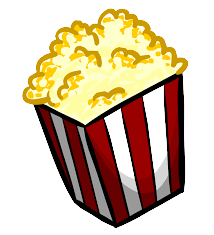
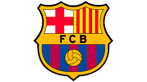
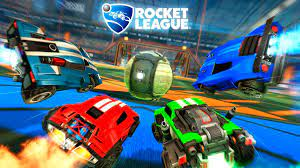

Mis gustos personales
El Cine

Me gusta el cine por las cosas que me hace sentir, cuando se mira una pelicula en la cual hay personajes con los quien nos encariñamos y algo les pasa nos preocupamos por ellos, buscamos soluciones para los personajes, eso es lo que me gusta del cine, que cuando esté viendo una serie y termine un capitulo me dejen con la intriga de que pasará en el siguiente, la parte que viene después tambien es un motivo por el cual todo esto me gusta y eso es el debatir con otras personas sobre lo que acabamos de ver. Normalmente mientras tenga tiempo intento ver una pelicula al día o unos capitulos de una serie al día
El Fútbol

Desde 2009 veo fútbol, en esos tiempos pues lo miraba por diversión, no como ahora que tengo el valor agregado de que me importa un equipo en particular y veo los partidos para saber que pasa con ese equipo. Fuera de eso tambien se creó en mi un gusto por la Premier League. Siempre que hay un partido del equipo que apoyo lo miro, no importa la hora que sea o el día, ahora ya por ejemplo los partidos de Premier los trato de ver cuando puedo.
VideoJuegos

Me gusta jugar para entretenerme con amigos o pasar el rato jugando yo solo, lo que más he jugado es FIFA y Rocket League porque son cosas relacionadas al fútbol y pues me gusta el fútbol, en vacaciones invierto mucho mi tiempo en jugar, ya que tengo todo el día libre, en epocas en donde estoy estudiando practicamente solo juego los fines de semana por el tiempo.